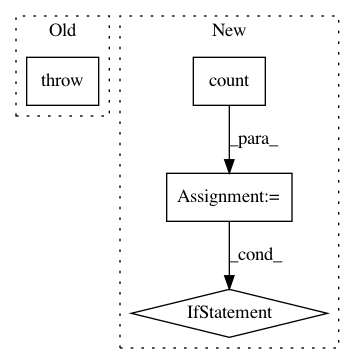

5cc1b3327714cbefb85a14540c20c90d963e341c,opennmt/training.py,Trainer,_steps,#Trainer#Any#Any#Any#,166
Before Change
except tf.errors.OutOfRangeError: // Dataset iterator exhausted.
break
if tf.math.is_nan(loss):
raise RuntimeError("Model diverged with loss = NaN.")
if i == 0 or (i + 1) % accum_steps == 0:
_step()
if i == 0:
After Change
target,
record_summaries=self._should_record_summaries(report_steps, with_accum=False))
for i in itertools.count():
try:
loss = _forward_and_step()
except tf.errors.OutOfRangeError: // Dataset iterator exhausted.
break
if i == 0:
self._broadcast_variables()
yield loss
else:
@tf.function
def _forward():
In pattern: SUPERPATTERN
Frequency: 3
Non-data size: 4
Instances
Project Name: OpenNMT/OpenNMT-tf
Commit Name: 5cc1b3327714cbefb85a14540c20c90d963e341c
Time: 2020-06-08
Author: guillaumekln@users.noreply.github.com
File Name: opennmt/training.py
Class Name: Trainer
Method Name: _steps
Project Name: OpenNMT/OpenNMT-tf
Commit Name: 187a5921a39ba2791176c1573c40850277d4a2ef
Time: 2020-05-29
Author: guillaumekln@users.noreply.github.com
File Name: opennmt/training.py
Class Name: Trainer
Method Name: _steps
Project Name: MTG/freesound
Commit Name: 0f7bacc26eec44c9f00f5d7666c1f87f0e051ce2
Time: 2017-11-10
Author: andres.ferraro@upf.edu
File Name: search/management/commands/post_dirty_sounds_to_solr.py
Class Name: Command
Method Name: handle